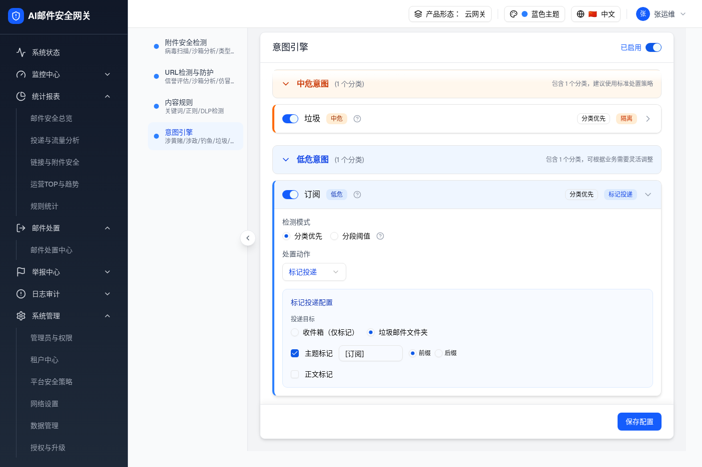
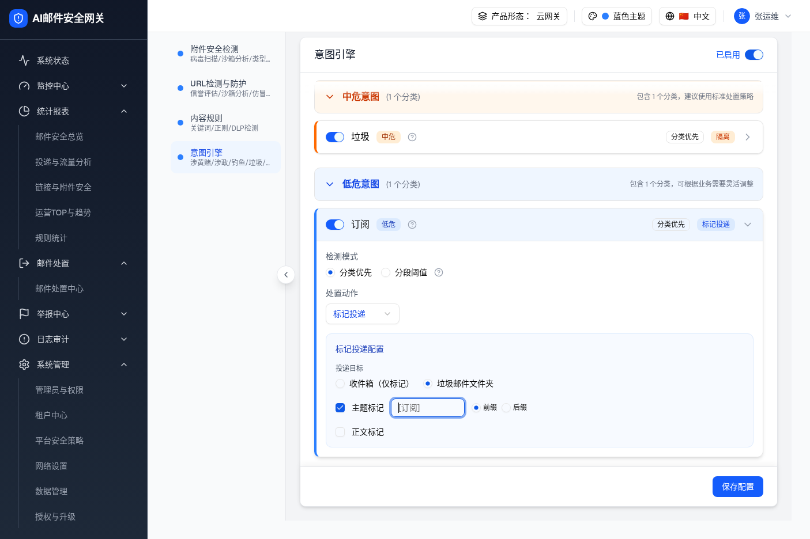
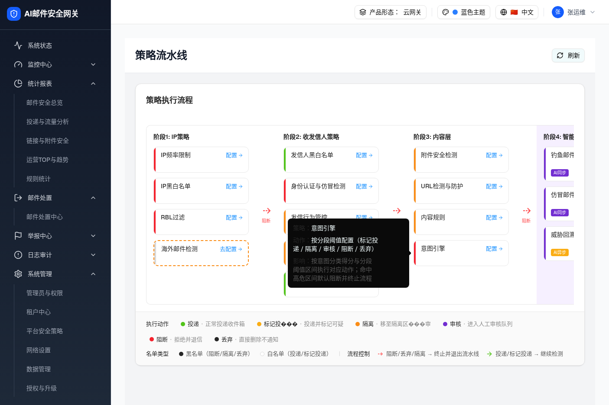
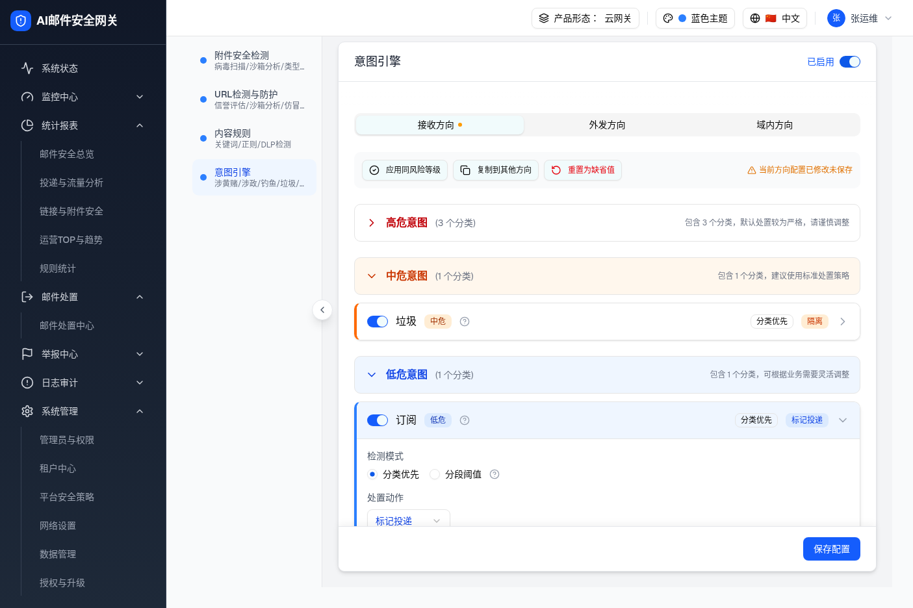

| 所属组件 |
D-11：意图分类卡片 → 标记投递子配置（MarkDeliverSubConfig），源文件 intent-engine-module.tsxD-08：策略执行流程图卡片 Tooltip（ getPolicyTooltipContent()），源文件 strategy-pipeline-page.tsx + contexts/language-context.tsx
|
| 主文件 | filter-rules-pipeline-intent-engine/index.html |
| 触发路径（D-11） | 层级1 分类卡片展开 → 处置动作选「标记投递」→ 标记投递配置展开 → 用户清空「主题标记」或「正文标记」输入框 → 输入框失焦（Tab / 点击其他区域）→ 输入框自动回填默认文案 [意图类型名] |
| 触发路径（D-08） | 策略执行流程图（/filter-rules/pipeline）→ hover 意图引擎卡片 → Tooltip 显示专属 effectKey 文案，无「黑名单」误用 |
| 规格版本 | v3（2026-07-17）· demo 源 commit 5d17c2e（intent-engine-module.tsx）/ b75c3cc（language-context.tsx） |
| 浏览器验证 |
2026-07-17，headless Chromium，viewport 1405×936。 D-11： /filter-rules/content 意图引擎 → 展开「订阅」卡片 → 主题标记输入框初始值 [订阅]（截图 v3-mark-label-subconfig.png）→ fill 清空 → placeholder 显示 [订阅]（截图 v3-mark-label-cleared.png）→ Tab 失焦 → 自动回填 [订阅]（截图 v3-mark-label-fallback.png）。D-08： /filter-rules/pipeline → hover 意图引擎卡片 → Tooltip 显示「按分段阈值配置…」+「按意图分类得分与分段阈值区间…」（截图 v3-pipeline-tooltip-intent.png）。另外截图 v3-outbound-direction.png：外发方向默认区间无「标记投递」动作（downgradeAction 生效）。 |
触发路径：层级1 展开「订阅」分类卡片 → 处置动作为「标记投递」→ 标记投递配置区自动展开，主题标记输入框显示 [订阅]（意图类型默认文案）。

操作提示：清空主题标记输入框，然后点击其他位置（失焦），观察自动回填效果。
| 元素 | 类型 | 文案 / 值 | 状态 | 行为说明 | 形态/角色差异 |
|---|---|---|---|---|---|
| 投递目标 | radio group | 收件箱（仅标记）/ 垃圾邮件文件夹 | 默认选中「垃圾邮件文件夹」 | 切换投递目标文件夹 | [Base] |
| 主题标记 checkbox | checkbox | 主题标记 | 默认勾选 | 勾选时显示主题标记输入框与前/后缀选项 | [Base] |
| 主题标记输入框 | input[type=text] | 初始值 [意图类型名]，如 [订阅] | 可编辑，maxLength=20 | 用户输入自定义文案；失焦时若值为空则回填默认值 | [Base] |
| 主题标记 placeholder | input placeholder | [意图类型名] | 仅在值为空时显示 | 给用户提示默认回填文案 | [Base] |
| 前/后缀 radio | radio group | 前缀 / 后缀 | 默认选「前缀」 | 控制标记文案插入位置 | [Base] |
| 正文标记 checkbox | checkbox | 正文标记 | 默认未勾选 | 勾选时显示正文标记输入框 | [Base] |
| 比对项 | demo 实际 DOM（accessibility snapshot） | 提取的 HTML | 是否一致 |
|---|---|---|---|
| 主题标记 textbox | textbox "[订阅]" ref=e50 | input value="[订阅]" placeholder="[订阅]" | ✅ |
| 正文标记 checkbox | checkbox "正文标记" checked=false ref=e52 | input[type=checkbox] unchecked | ✅ |
| 主题标记 checkbox | checkbox "主题标记" checked=true ref=e49 | input[type=checkbox] checked | ✅ |
| 前/后缀 radiogroup | radiogroup "前缀后缀" ref=e51，默认前缀 checked | radio group，默认前缀 checked | ✅ |
| 投递目标 radiogroup | radiogroup "收件箱（仅标记）垃圾邮件文件夹" ref=e48，垃圾邮件文件夹 checked | radio group，垃圾邮件文件夹 checked | ✅ |
触发路径：状态 A → 用户选中主题标记输入框，删除全部内容（值变为空字符串）。此时 onChange 实时写入空值，placeholder [订阅] 浮现，输入框边框变为琥珀色警示。

config.subjectMark.text（React state）。defaultText（即 [订阅]），此时浮现，提示用户默认文案。| 元素 | 值 | 状态变化 | onBlur 时机 |
|---|---|---|---|
| 主题标记输入框 | 空字符串 "" | 获焦中，显示 placeholder [订阅] | 尚未失焦，回填未触发 |
| React state subjectMark.text | ""（空） | onChange 已写入 | onBlur 后将回填 |
| 比对项 | demo 实际 DOM | 提取的 HTML | 是否一致 |
|---|---|---|---|
| textbox 值 | 空字符串，placeholder "[订阅]" 可见 | value="" placeholder="[订阅]" | ✅ |
| 输入框获焦 | 输入框 :focus 态，蓝色轮廓 | :focus CSS 已内联 | ✅ |
[订阅]触发路径：状态 B → 用户按 Tab 或点击其他区域，主题标记输入框失焦 → onBlur 检测到 value.trim() === "" → 调用 onChange({ ...config, subjectMark: { ...config.subjectMark, text: "[订阅]" } }) → 输入框值恢复为 [订阅]。
操作提示：清空主题标记输入框后点击其他区域，观察「绿色提示条 + 输入框回填」。
| 元素 | 值（回填后） | 触发逻辑 | 对应源码 |
|---|---|---|---|
| 主题标记输入框 | [订阅]（回填） | onBlur: if (!value.trim()) onChange({ ...config, subjectMark: { ...config.subjectMark, text: defaultText } }) | intent-engine-module.tsx MarkDeliverSubConfig L497–501 |
| 正文标记输入框 | [订阅]（如已勾选且清空） | onBlur: 同上，作用于 config.bodyMark.text | intent-engine-module.tsx MarkDeliverSubConfig L548–552 |
| defaultText prop | [${INTENT_METADATA[intentType].labelZh}] | 由 IntentCard 调用处传入，格式固定为 [意图类型中文名] | intent-engine-module.tsx IntentCard L968 |
| placeholder 属性 | 同 defaultText | 空值时浮现，为用户提示回填文案 | 同 L504 / L555 |
| 比对项 | demo 实际 DOM（Tab 失焦后） | 提取的 HTML | 是否一致 |
|---|---|---|---|
| textbox 值（失焦后） | textbox "[订阅]"（回填） | value="[订阅]" | ✅ |
| placeholder | 文本框 placeholder="[订阅]" | placeholder="[订阅]" | ✅ |
| React state 写回 | onChange 被 onBlur 调用，state 更新为 "[订阅]" | 内联 onblur 脚本模拟 | ✅ 行为一致 |
正文标记 checkbox 初始未勾选，输入框禁用（disabled）。勾选后：
config.bodyMark.text（由 createDefaultMarkDeliverConfig 初始化为 [意图类型名]）。defaultText。defaultText，空值时浮现。| 元素 | 类型 | 初始值 | onBlur 行为 |
|---|---|---|---|
| 正文标记 checkbox | checkbox | 未勾选 | 无 |
| 正文标记输入框（勾选后） | input[text]，disabled → enabled | [意图类型名] | 空值时回填 defaultText |
| 正文标记 placeholder | input placeholder | [意图类型名] | — |
本次 v3 同步落地方案C：PipelinePolicy 接口新增 actionKeys、effectKey 字段，每条策略在数据定义处独立填写专属 i18n key，
getPolicyTooltipContent() 改为直接读取这两个字段，删除了原来按 type 分支共用文案的逻辑。
以「意图引擎」为例，原 tooltip 误用「黑名单命中则阻断并终止流程」（与 IP/RBL 等黑名单策略共用的 policyEffectBlock key）；
修复后使用专属 key pipeline.effect.intentEngine，文案为「按意图分类得分与分段阈值区间执行对应动作；命中高危区间默认阻断并终止流程」。

| 字段 | v2 文案（误用共用 key） | v3 文案（专属 effectKey） | 来源 key |
|---|---|---|---|
| 策略名 | 意图引擎 | 意图引擎 | pipeline.intentEngine |
| 动作 | （无独立动作 key） | 按分段阈值配置（标记投递 / 隔离 / 审核 / 阻断 / 丢弃） | pipeline.action.intentEngine |
| 影响 | 黑名单命中则阻断并终止流程（❌ 误用） | 按意图分类得分与分段阈值区间执行对应动作；命中高危区间默认阻断并终止流程 | pipeline.effect.intentEngine |
| 项 | 修复前（v1/v2 · 差异 D-08） | 修复后（v3 · 方案C） |
|---|---|---|
| Tooltip 影响文案 | 「黑名单命中则阻断并终止流程」（pipeline.policyEffectBlock，所有 forced/blocking 类型共用，语义错误） |
「按意图分类得分与分段阈值区间执行对应动作；命中高危区间默认阻断并终止流程」（pipeline.effect.intentEngine，专属 key） |
| Tooltip 动作文案 | 「阻断」（固定写死） | 「按分段阈值配置（标记投递 / 隔离 / 审核 / 阻断 / 丢弃）」（pipeline.action.intentEngine，专属 key） |
| 文案耦合方式 | getPolicyTooltipContent() 按 policy.type 分支，所有 forced 类型共用一套文案 |
PipelinePolicy 新增 actionKeys?: string[] / effectKey?: string 字段；函数直接读字段，删除 type 分支逻辑；zh/en 各新增 38 个专属 i18n key |

将鼠标悬停到下方卡片上，查看修复前后 Tooltip 文案差异。
修复前 — 误用「黑名单」文案
修复后 — 专属 effectKey 文案
| 比对项 | demo 实际 DOM（agent-browser 快照） | 预览 HTML | 是否一致 |
|---|---|---|---|
| 策略名 | 「意图引擎」 | 修复后卡片 Tooltip 策略行「意图引擎」 | ✅ |
| 动作文案 | 「按分段阈值配置（标记投递 / 隔离 / 审核 / 阻断 / 丢弃）」 | 绿色动作行同文案 | ✅ |
| 影响文案 | 「按意图分类得分与分段阈值区间执行对应动作；命中高危区间默认阻断并终止流程」 | 影响行同文案 | ✅ |
| 「黑名单」字样 | 不出现（demo 快照已验证） | 修复后卡片无「黑名单」 | ✅ |
| ID | 问题 | 修复前行为 | 修复后行为 | 源码位置 |
|---|---|---|---|---|
| D-11 已修复 | 标记文案空值：用户清空主题标记/正文标记后失焦，写入空字符串，后续保存标记文案为空 | 无回填逻辑；onChange 即时写入 ""；placeholder 固定为「标记文案」无法预示默认值 |
onBlur 检测 value.trim() === ""，回调 onChange 写入 defaultText（[意图类型名]）；placeholder 同步改为 defaultText |
intent-engine-module.tsx MarkDeliverSubConfig |
| D-08 已修复 | Pipeline Tooltip 文案误用：意图引擎卡片 hover 影响文案显示「黑名单命中则阻断」，与策略实际行为不符 | getPolicyTooltipContent() 按 type="forced" 返回共用 policyEffectBlock 文案 | 方案C：PipelinePolicy 新增 actionKeys/effectKey 字段；函数直接读字段；意图引擎使用专属 key pipeline.effect.intentEngine 文案 | strategy-pipeline-page.tsx + contexts/language-context.tsx |